There is a man who lives by a river, and he is hungry. He has never learned to fish. Three people come along, and each offers to help — and each, without quite knowing it, believes something different about what "helping" even means.
The first gives him a fish. He eats tonight. And tomorrow he is exactly where he started — hungry, helpless, waiting for the next gift.
The second teaches him to fish. Better — now he eats every day. But he has learned one trick. Move him to a desert, or a forest with no river, and he starves beside the food, because all he knows is fish.
The third teaches him nothing at all. They simply make sure that the man's own hunger is the only teacher he needs — and then they step back. And the hungry man, left to it, invents fishing. Then traps for birds. Then he plants the seeds he finds. Then he trades his surplus with a neighbour. Skills nobody taught him, and a few nobody imagined, all falling out of one relentless thing: the need.
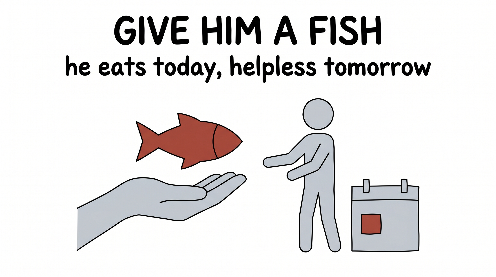
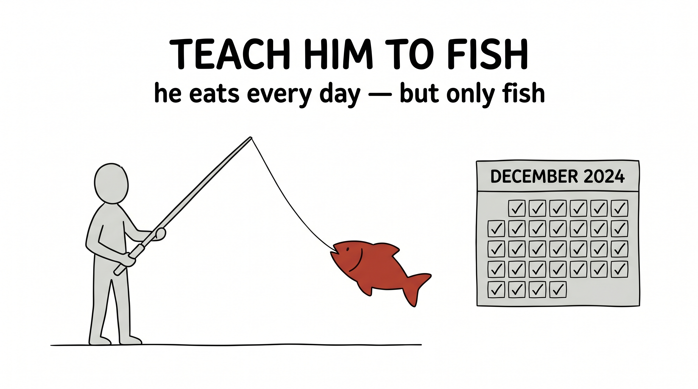
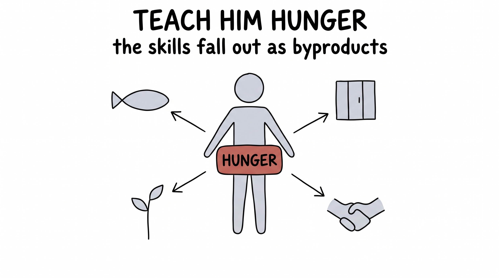
That third way is the whole lecture. The hunger is a loss function — a single, humble thing to minimize. The fishing, the traps, the farming, the trade — those are byproducts. And the astonishing claim of modern AI is that if you choose the hunger well enough, the byproducts start to look a lot like intelligence.
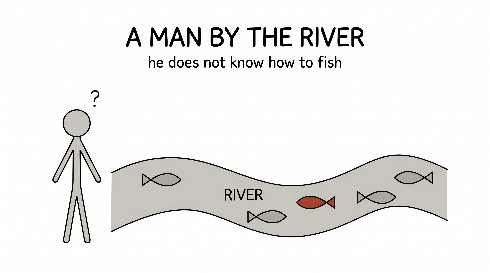
Here is the idea, stated plainly. You do not get intelligence by listing it out, rule by rule, skill by skill. You get it by choosing a hunger — a loss function — so well-aimed that being intelligent becomes simply the cheapest way to satisfy it.
Design a clever enough loss, and capabilities you never specified — never even imagined — come along for free, as byproducts of minimizing it.
The loss is the lever. It is the one thing you actually choose. Everything else — the weights, the features, the skills — is found for you by gradient descent (that was last lecture). So the whole game becomes: what is the right hunger? The rest of this lecture is three times watching someone pick a humble little loss and get something extraordinary, for free.
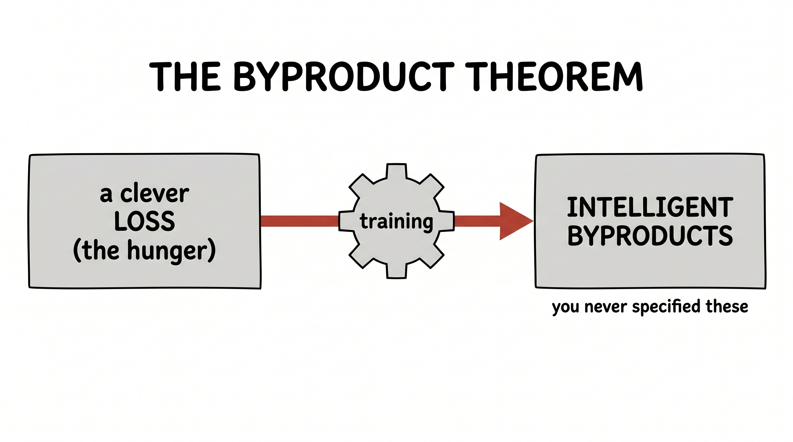
Take the three ways and point them at a language model. How do you teach a machine to use human language?
Give it a fish. Store every sentence and its reply in a giant table. It's a parrot — fine until you say something the table has never seen, and then it has nothing.
Teach it to fish. Hand-code the grammar: subject before verb, rules for tense, for plurals, for commas. It obeys — but it's a rulebook, not a mind, and it has no idea what any sentence means.
Give it the hunger. Tell it nothing about grammar or meaning. One objective only: given the words so far, predict the next one.
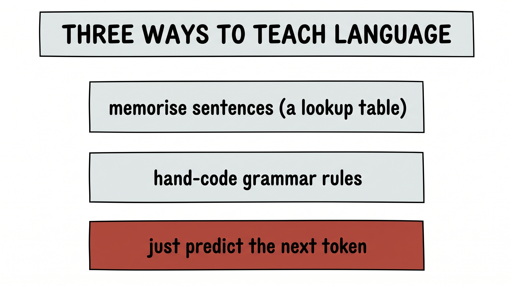
"The cat sat on the ___." Guess the next word. That is the entire hunger — and to satisfy it across a trillion sentences, the model is quietly forced to learn two enormous things it was never taught.
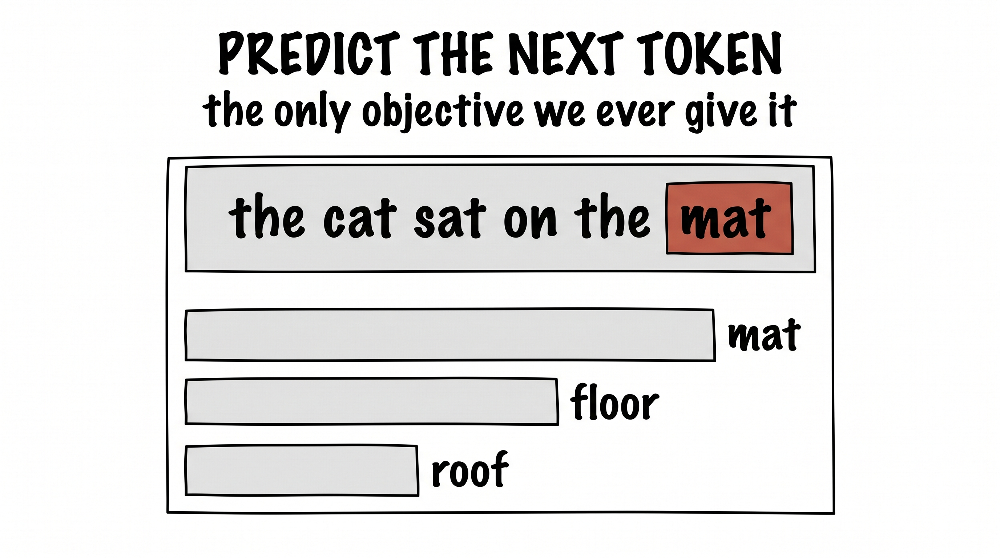
The first byproduct is form. To predict well, the model has to absorb the shape of the language — it learns subject-verb-object without ever hearing the words "subject" or "verb." We never wrote a grammar; the grammar fell out.
The second byproduct is deeper: meaning. Consider the sentence "blue electrons eat fish." The form is flawless — article, adjective, noun, verb, noun, all in order — and yet it is utter nonsense. A model that only learned form would happily say it. But a model hungry enough to predict real text learns that nobody ever writes that, because it doesn't mean anything — and so it won't say it either. Meaning, the thing we never defined, fell out of the same humble guess-the-next-word game.
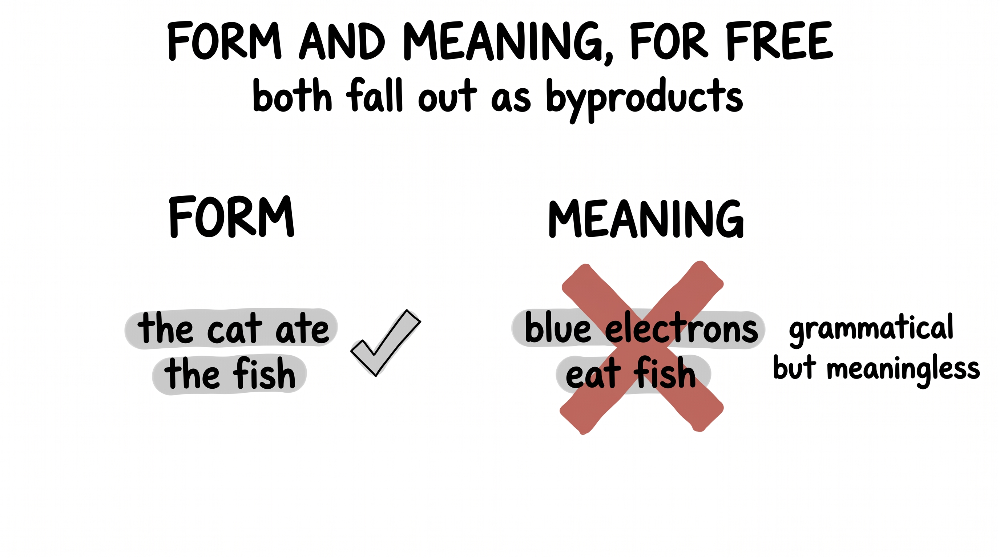
Here is a problem that sounds impossible. We want to turn every word into a vector — a point in space — so that a machine can do arithmetic on meaning. But who decides where each word goes? You cannot sit down and hand-place a few hundred thousand words by taste. "King" goes... where, exactly? And relative to what?
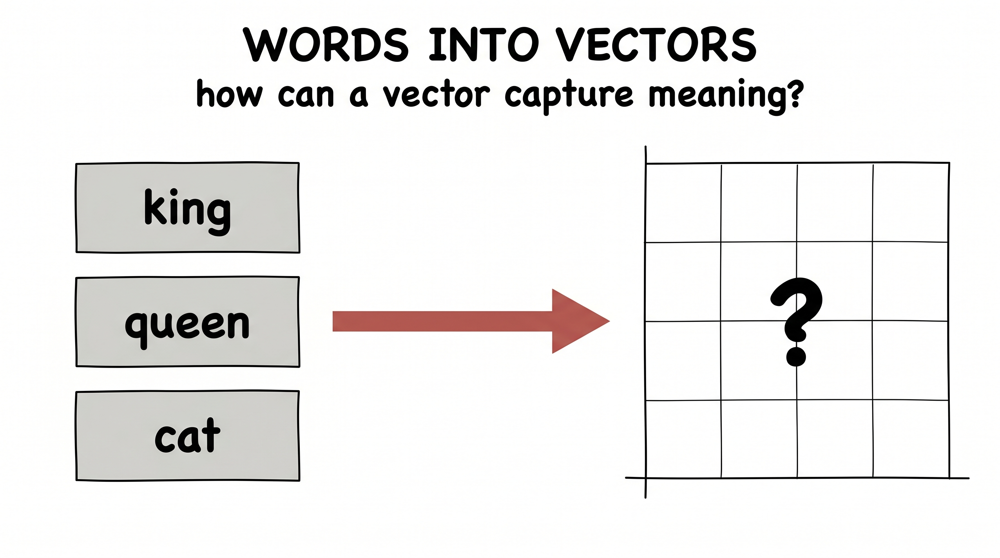
So in 2013 a team at Google made the same move: don't place the words — design a hunger that places them for you. The proxy is beautiful and humble. A word should be good at predicting the company it keeps. Pull words that show up together in real sentences closer; push random, unrelated words apart. That's the whole loss.
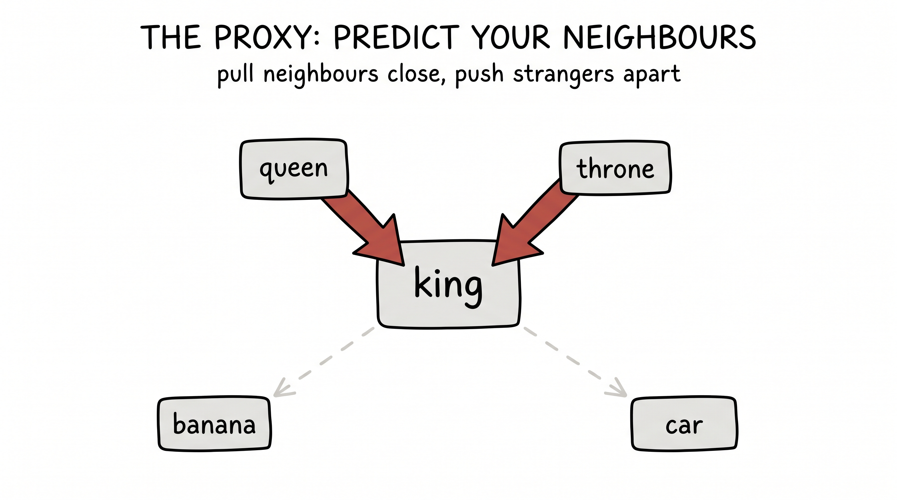
Train on that one game over a mountain of text, and watch what falls out. Every word drifts to a spot that quietly encodes its meaning. Synonyms pile together. Kings and queens settle near royalty; cats and dogs near animals. And the geometry turns uncanny: the little step from "man" to "king" turns out to be the very same step as "woman" to "queen" — so king − man + woman lands almost exactly on queen. Nobody placed a single word. Meaning fell out, as pure geometry.
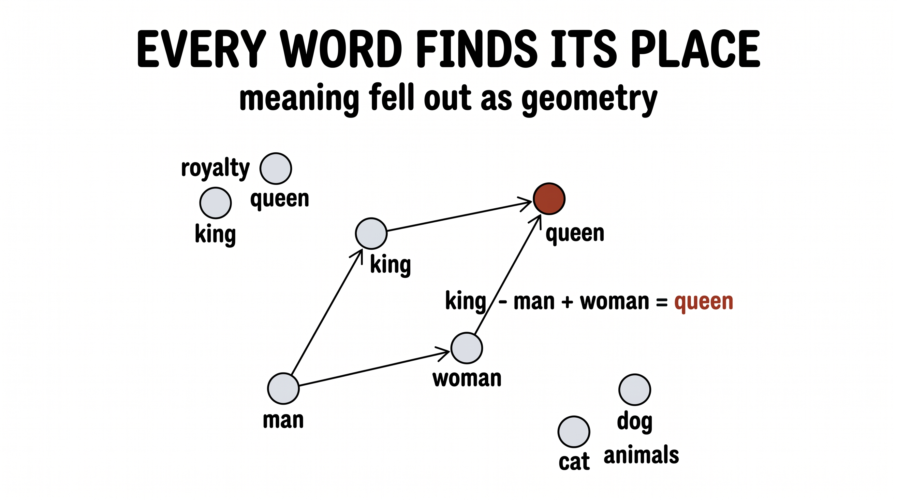
The quietest example is also the purest, and it's decades old. The enemy is overfitting. A model can be so eager to please that it threads its curve through every single noisy data point — memorizing the wobble instead of the trend — and then falls apart the moment it sees something new.
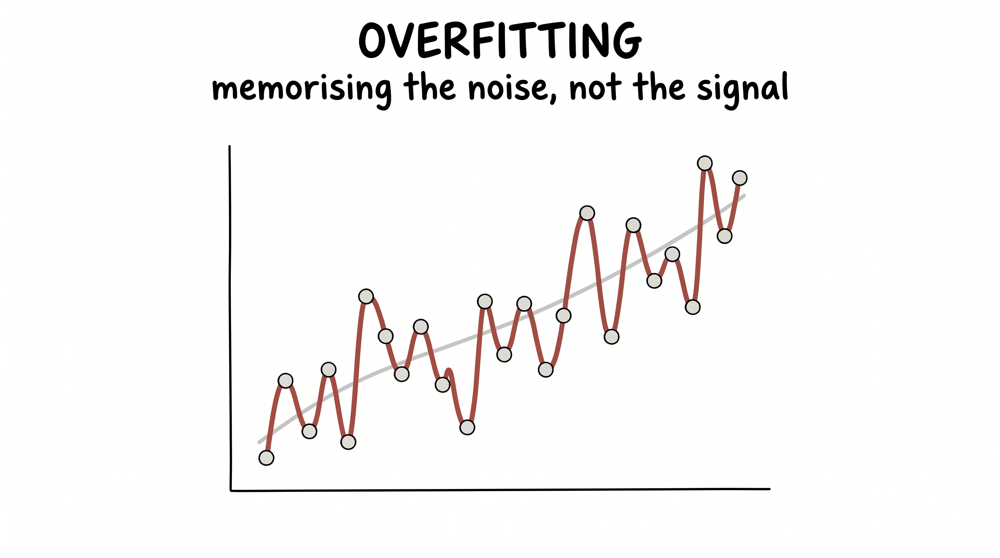
What we actually want is for it to generalize. But here's the trap: "generalize" is not a quantity you can directly minimize. You cannot write loss = how_badly_it_generalizes — you don't have the future data to measure it. So you reach for a hunger that gets you there sideways.
The clue is this: overfit models always have huge weights. Those violent up-and-down wiggles can only be drawn with enormous coefficients. So add one term to the loss that simply makes big weights expensive:
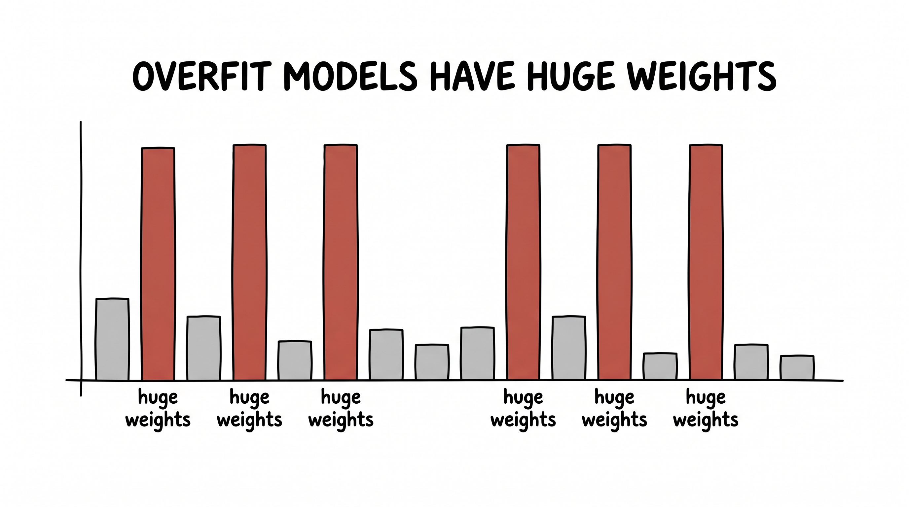
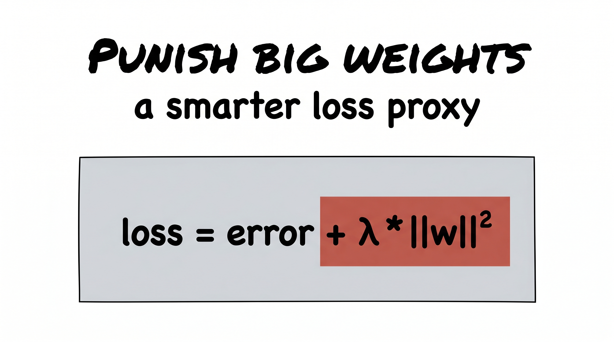
Now the model is hungry for two things at once: fit the data, and keep its weights small. That second hunger quietly forbids the wild wiggles — and a smooth, sensible curve is all that's left. The dial λ sets how hard you push. Try it yourself: drag λ up and watch the frantic overfit curve calm into something that will actually generalize.
Notice we never told it to generalize. We only made big, wobbly weights costly — and good judgement fell out as the byproduct.
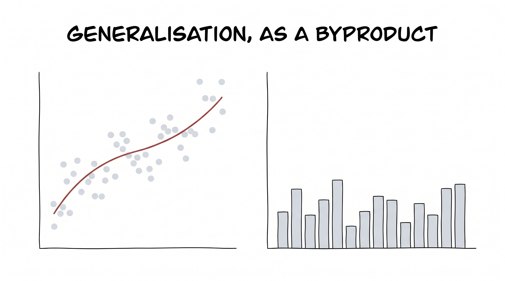
If this all sounds like old wisdom, the most jaw-dropping example landed only last year. We want models that reason — that think in steps, slow down on hard problems, and catch their own mistakes. The obvious way is to teach it to fish: gather millions of human worked-solutions and have the model imitate them, step by careful step.
DeepSeek tried the third way instead. They built a hunger and almost nothing else: a reinforcement-learning reward that asked one blunt question — is the final answer correct? — and said absolutely nothing about how to think. No example reasoning. No "show your work." Just: get it right.
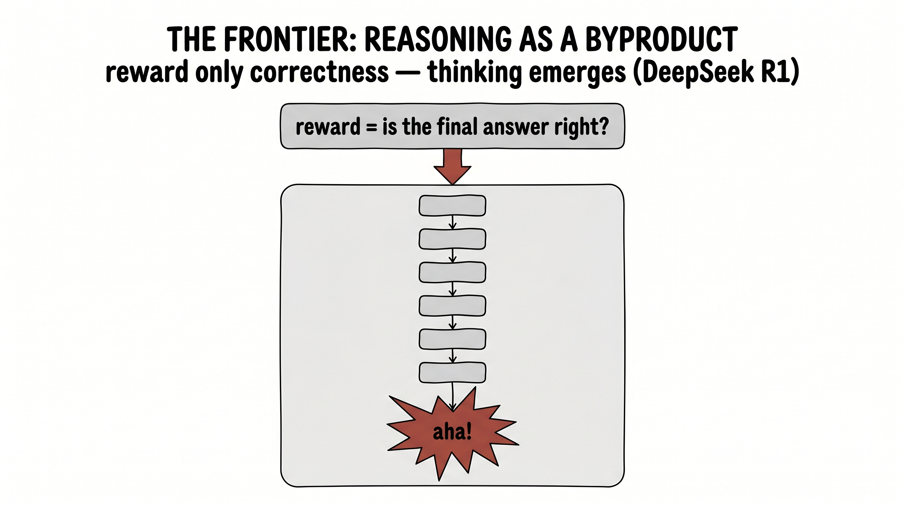
And the byproduct stunned everyone who saw it. Chasing nothing but that reward, the model began — on its own — to write longer and longer chains of reasoning. It started to double back and check itself. It developed a now-famous "aha moment," learning to stop mid-thought and reconsider. None of it was demonstrated. All of it emerged, as a byproduct of "get the answer right." Reasoning, it turns out, is the cheapest way to keep being correct — so the hunger for correctness grew a thinker.
So here is the move to carry out of the room with you. The next time you are stuck on something hard — in research, in a product, at a whiteboard at midnight — resist the urge to build the capability directly, brick by brick. Flip the question on its head.
Don't ask "how do I build this skill?" Ask: what is the hunger? What humble little loss function would make the thing I want the cheapest possible way to win? Find that loss, hand it to gradient descent, and step back. More often than you would ever believe, the capability you were trying so hard to engineer is sitting right there — waiting, as a byproduct of the right hunger.
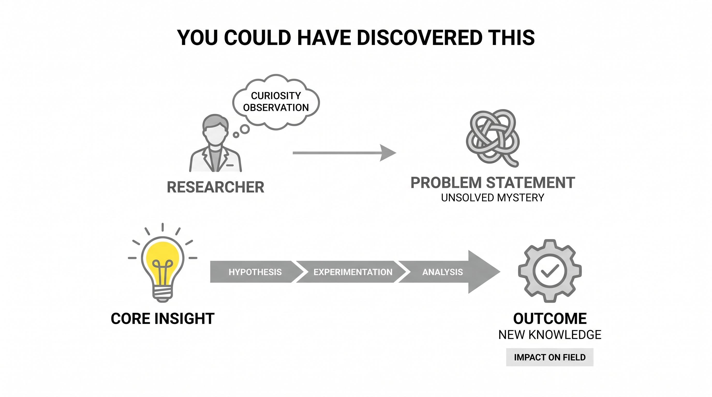
Don't engineer the capability — engineer the hunger. Ask what loss function would make the thing you want the cheapest way to win, hand it to gradient descent, and let the capability fall out. Someone discovered DeepSeek-R1 this way. The next one is waiting for whoever picks the right loss.